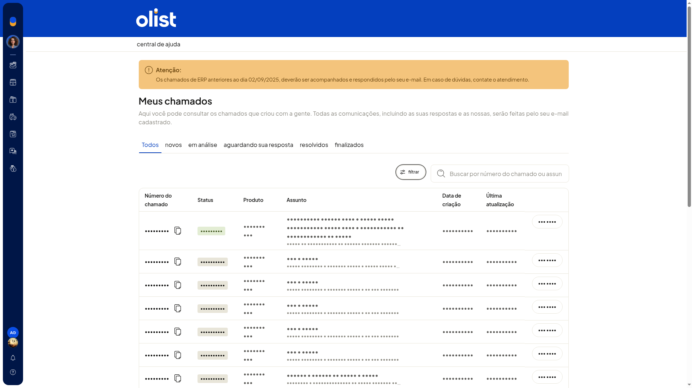

Consultar chamados de suporte
No ERP da Olist, você consulta os chamados de suporte já abertos na tela Suporte do sistema ERP. Dá para ver a situação de cada solicitação, buscar um chamado e filtrar por produto.
Você também chega a essa tela por Ajuda > Suporte.
Importante
- A lista Meus chamados serve só para consulta. Não há botão de novo chamado nessa lista.
- O link abra um chamado, em artigo da Central de ajuda, abre essa mesma lista, e não um formulário.
Instruções
-
Acesse Início > Índice.
-
Abra o card Fale conosco.
-
Na tela Suporte do sistema ERP, clique em meus chamados.
-
Consulte a lista pelas abas Todos, novos, em análise, aguardando sua resposta, resolvidos e finalizados, ou use a busca.

-
Clique em Filtrar.
-
Escolha Loja, Envios ou Sistema ERP.
-
Clique em filtrar para aplicar. Para sair sem aplicar, clique em cancelar. A lista mostra as solicitações já abertas e não cria um chamado novo.
Resultado
Você consulta as solicitações de suporte já abertas, conforme a aba, a busca ou o filtro de produto.